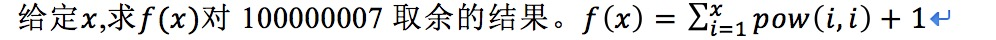

一次头秃的复习。
0x01 排列问题
题目描述
输入一个可能含有重复字符的字符串，打印出该字符串中所有字符的全排列。
输入
单组测试数据，输入数据是一个长度不超过10个字符的字符串，以逗号结尾。
输出
打印出该字符串中所有字符的全排列。以字典序顺序输出，用空格分隔。
样例输入
样例输出
主要还是看全排列核心代码吧，不重复情况下的全排列，重复的加个排序就好了。
1 2 3 4 5 6 7 8 9 10 11 12 13 14 15 16 17 template <typename T>void perm (T list[], int low, int high) if (low == high) { for (int i = 0 ; i <= high; i++) { cout << list[i]; } cout << " " ; } else { for (int i = low; i <= high; i++) { swap (list[low], list[i]); perm (list, low + 1 , high); swap (list[low], list[i]); } } } }
完整代码
1 2 3 4 5 6 7 8 9 10 11 12 13 14 15 16 17 18 19 20 21 22 23 24 25 26 27 28 29 30 31 32 33 34 35 36 37 38 39 40 41 42 43 #include <bits/stdc++.h> using namespace std; template <typename T>void perm (T list[], int low, int high) char t; if (low == high) { for (int i = 0 ; i <= high; i++) { cout << list[i]; } cout << " " ; } else { for (int i = low; i <= high; i++) { for (int is = low; is <= high; is++) for (int js = is; js <= high; js++) { if (list[js] < list[is]) { t = list[js]; list[js] = list[is]; list[is ] = t; } } if (list[i] == list[i + 1 ]) { continue ; } else { swap (list[low], list[i]); perm (list, low + 1 , high); swap (list[low], list[i]); } } } } int main () string str; cin >> str; int s = str.length () - 1 ; char st[s], t; for (int i = 0 ; i < s; i++) st[i] = str[i]; sort (st,st+s); perm (st, 0 , s - 1 ); return 0 ; }
C++ sort()函数升序或降序排序方法：
可以用C++里的模板库（什么也不写，默认升序）
升序：less();
降序：greater();
1 2 3 4 5 6 7 8 9 10 11 12 13 #include <bits/stdc++.h> using namespace std; int main () int a[4 ]={1 ,3 ,4 ,2 }; sort (a,a+4 ); for (int i=0 ;i<4 ;i++) cout<<a[i]<<" " ; cout<<endl; sort (a,a+4 ,greater<int >()); for (int i=0 ;i<4 ;i++) cout<<a[i]<<" " ; return 0 ; }
但是现在有一个next_permutation()函数可以直接进行全排列，考试利器啊
升序全排列：next_permutation()；
降序全排列：prev_permutation();
1 2 3 4 5 6 7 8 9 10 11 12 13 14 15 16 17 18 19 20 21 22 23 24 25 26 27 #include <bits/stdc++.h> using namespace std; int main () string str; cin >> str; int s = str.length () - 1 ; char st[s]; for (int i = 0 ; i < s; i++) st[i] = str[i]; sort (st,st+s); do { for (int i = 0 ; i < s; i++) cout<<st[i]; cout<<" " ; }while (next_permutation (st,st+s)); return 0 ; }
0x02 跳台阶
题目描述
一只青蛙一次可以跳上1级台阶，也可以跳上2级。求该青蛙跳上一个n级的台阶总共有多少种跳法。
输入
多组测试样例。每组测试样例包含一个整数n。(1<=n<=100)
输出
每组测试样例输出一行，表示青蛙跳上n级台阶的跳法数量.
所得到的结果模1000000007
样例输入
样例输出
设f(n)为跳法数量，最后跳一阶时，跳法是f(n-1),最后跳两阶时，跳法是f(n-2)那么f(n)=f(n-1)+f(n-2)。
很容易知道，f(1)=1；f(2)=2； f(n)=f(n-1)+f(n-2)，n>2；很明显就是斐波那契数列的形式。
1 2 3 4 5 6 7 8 9 10 11 12 13 14 15 16 17 18 19 20 21 #include <bits/stdc++.h> using namespace std;const int m=1000000007 ;int f (int n) int ans =0 ; if (n<=2 ) return n; else { ans=f (n-1 )%m+f (n-2 )%m; } return ans%m; } int main () int n; while (cin>>n){ int t; t=f (n)%m; cout<<t<<endl; } }
1 2 3 4 5 6 7 8 9 10 11 12 13 14 15 16 17 18 19 20 21 22 23 24 #include <bits/stdc++.h> using namespace std;const int m=1000000007 ;int f (int n) if (n<=2 ) return n; int ans[n+5 ],k=3 ; ans[1 ]=1 ; ans[2 ]=2 ; while (k<=n){ ans[k]=ans[k-1 ]%m+ans[k-2 ]%m; k++; } return ans[n]%m; } int main () int n; while (cin>>n){ int t; t=f (n)%m; cout<<t<<endl; } }
0x03 快速幂
题目描述

输入
多组测试样例，最多50组。每组测试样例给定一个整数x(1<=x<=25000)
输出
对每个样例，输出一行，代表f(x)对100000007取余的结果。
样例输入
样例输出
关键代码，求a^b^(%m)的值。
1 2 3 4 5 6 7 8 9 10 11 12 #define ll long long const int m=100000007 ;ll p (ll a,ll b) { ll r=1 ; while (b){ if (b&1 ) r=r*a%m; a=a*a%m; b>>=1 ; } return r%m; }
完整代码
1 2 3 4 5 6 7 8 9 10 11 12 13 14 15 16 17 18 19 20 21 22 23 24 25 26 #include <bits/stdc++.h> using namespace std;#define ll long long const int m=100000007 ;ll p (ll a,ll b) { ll r=1 ; while (b){ if (b&1 ) r=r*a%m; a=a*a%m; b>>=1 ; } return r%m; } int main () ll x,t=0 ; while (cin>>x) { for (ll j = 1 ; j <= x; j++) { t = (t %m+ p (j, j))%m; } cout << t + 1 << endl; t = 0 ; } return 0 ; }
0x04 凯撒加密法
题目描述
凯撒加密法，或称恺撒加密、恺撒变换、变换加密，是一种最简单且最广为人知的加密技术。它是一种替换加密的技术，明文中的所有字母都在字母表上向后（或向前）按照一个固定数目进行偏移后被替换成密文。
输入
输入包含多组数据，其中第一行为数据组数T（T<=10）
输出
对每组数据，输出一行字符串，代表输入中的密文对应的明文。
样例输入
1 2 3 1 DEFGHIJKLMNOPQRSTUVWXYZABC 3
样例输出
1 ABCDEFGHIJKLMNOPQRSTUVWXYZ
凯撒还是挺简单的，关键代码
1 2 3 4 5 6 7 8 9 10 for (int i=0 ;i<t;i++){ for (int j=0 ;j<int length ());j++){ if (str[i][j]>='A' &&str[i][j]<='Z' ) str[i][j]='A' +(str[i][j]-'A' -a[i]+26 )%26 ; if (str[i][j]>='a' &&str[i][j]<='z' ) str[i][j]='a' +(str[i][j]-'a' -a[i]+26 )%26 ; } cout<<str[i]<<endl; }
完整代码
1 2 3 4 5 6 7 8 9 10 11 12 13 14 15 16 17 18 19 20 21 22 #include <bits/stdc++.h> using namespace std;string str[15 ]; int t,a[15 ];int main () cin>>t; for (int i=0 ;i<t;i++){ cin>>str[i]; cin>>a[i]; a[i]%=26 ; } for (int i=0 ;i<t;i++){ for (int j=0 ;j<int length ());j++){ if (str[i][j]>='A' &&str[i][j]<='Z' ) str[i][j]='A' +(str[i][j]-'A' -a[i]+26 )%26 ; if (str[i][j]>='a' &&str[i][j]<='z' ) str[i][j]='a' +(str[i][j]-'a' -a[i]+26 )%26 ; } cout<<str[i]<<endl; } return 0 ; }
0x05 Vigenère 密码
题目描述
16 世纪法国外交家 Blaise de Vigenère 设计了一种多表密码加密算法——Vigenère 密码。Vigenère 密码的加密解密算法简单易用，且破译难度比较高，曾在美国南北战争中为南军所广泛使用。
在密码学中，我们称需要加密的信息为明文，用 MM 表示；称加密后的信息为 密文，用 CC 表示；而密钥是一种参数，是将明文转换为密文或将密文转换为明文的算法中输入的数据，记为 kk 。 在 Vigenère 密码中，密钥 kk 是一个字母串，k =k1k2…kn 。当明文 M = m1m2…mn 时，得到的密文 C = c1c2…cn ，其中 ci = mi ® ki，运算 ® 的规则如下表所示：
® 运算忽略参与运算的字母的大小写，并保持字母在明文 MM 中的大小写形式；
当明文 MM 的长度大于密钥 kk 的长度时，将密钥 kk 重复使用。 例如，明文 M=M =Helloworld，密钥 k=k =abc时，密文 C=C =Hfnlpyosnd。
输入
第一行为一个字符串，表示密钥 kk ，长度不超过 100100，其中仅包含大小写字母。
第二行为一个字符串，表示经加密后的密文，长度不超过 10001000，其中仅包含大小写字母。
输出
输出共 1 行，一个字符串，表示输入密钥和密文所对应的明文。
样例输入
1 2 CompleteVictory Yvqgpxaimmklongnzfwpvxmniytm
样例输出
1 Wherethereisawillthereisaway
这个跟凯撒一样啊，稍微改下就行了。
1 2 3 4 5 6 7 8 9 10 11 12 13 14 15 16 17 18 19 20 21 22 #include <bits/stdc++.h> using namespace std;string str,k; int main () cin>>k; cin>>str; int l=int length ()); for (int i=0 ;i<l;i++){ if (k[i]>='A' &&k[i]<='Z' ) k[i]=k[i]-'A' ; if (k[i]>='a' &&k[i]<='z' ) k[i]=k[i]-'a' ; } for (int j=0 ;j<int length ());j++){ if (str[j]>='A' &&str[j]<='Z' ) str[j]='A' +(str[j]-'A' -k[j%l]+26 )%26 ; if (str[j]>='a' &&str[j]<='z' ) str[j]='a' +(str[j]-'a' -k[j%l]+26 )%26 ; } cout<<str<<endl; return 0 ; }
0x06 最长子序列
题目描述
在一个数组中找出和最大的连续几个数。（至少包含一个数）
例如：
数组A[] = [-2,1,-3,4,-1,2,1,-5,4]，则连续的子序列[4,-1,2,1]有最大的和6.
输入
第一行输入一个不超过1000的整数n。
第二行输入n个整数A[i]。
输出
输出一个整数，表示最大的和。
样例输入
样例输出
没时间了，后面直接背代码吧。
1 2 3 4 5 6 7 8 9 10 11 12 13 14 15 16 17 18 19 20 21 #include <bits/stdc++.h> using namespace std; int dp[1010 ]; int ans;int main () int n, a[1010 ]; cin >> n; for (int i = 0 ; i < n; i++) { cin >> a[i]; } ans = dp[0 ] = a[0 ]; for (int j = 1 ; j < n; j++) { if (dp[j - 1 ] > 0 ) { dp[j] = dp[j - 1 ] + a[j]; } else { dp[j] = a[j]; } ans = max (dp[j], ans); } cout << ans; }
0x07 三值排序
题目描述
排序是一种很频繁的计算任务。一个实际的例子是，当我们给某项竞赛的优胜者按金银铜牌排序的时候。在这个任务中可能的值只有三种1，2和3。我们用交换的方法把他排成升序的。
写一个程序计算出，计算出的一个包括1、2、3三种值的数字序列，排成升序所需的最少交换次数。
输入
输入第1行为类别的数量N（1≤N≤1000）
输入第2行到第N+1行，每行包括一个数字（1或2或3）。
输出
输出包含一行，为排成升序所需的最少交换次数。
样例输入
样例输出
1 2 3 4 5 6 7 8 9 10 11 12 13 14 15 16 17 18 19 20 21 22 23 24 25 26 27 28 29 30 31 32 33 34 35 36 37 38 39 40 41 42 43 44 45 46 #include <iostream> using namespace std; int main () int n; cin >> n; int *a = new int [n]; int i, c1 = 0 , c2 = 0 ; for (i = 0 ; i < n; ++i){ cin >> a[i]; if (a[i] == 1 ){ ++c1; }else if (a[i] == 2 ){ ++c2; } } int c12 = 0 , c13 = 0 , c21 = 0 , c23 = 0 , c31 = 0 , c32 = 0 ; for (i = 0 ; i < c1; ++i){ if (a[i] == 2 ){ ++c12; }else if (a[i] == 3 ){ ++c13; } } for (i = c1; i < c1 + c2; ++i){ if (a[i] == 1 ){ ++c21; }else if (a[i] == 3 ){ ++c23; } } for (i = c1 + c2; i < n; ++i){ if (a[i] == 1 ){ ++c31; }else if (a[i] == 2 ){ ++c32; } } int res = min (c12, c21) + min (c13, c31) + min (c23, c32); c12 -= c21; if (c12 < 0 ){ c12 = -c12; } res += c12 * 2 ; cout << res << endl; }
0x08 最长公共子序列
题目描述
一个字符串A的子串被定义成从A中顺次选出若干个字符构成的串。如A=“cdaad” ,顺次选1，3，5个字符就构成子串” cad” ,现给定两个字符串，求它们的最长共公子串。
输入
第一行两个字符串用空格分开。两个串的长度均小于2000 。
输出
最长子串的长度。
样例输入
样例输出
1 2 3 4 5 6 7 8 9 10 11 12 13 14 15 16 17 18 19 #include <bits/stdc++.h> using namespace std;int f[2010 ][2010 ];char b[2010 ],a[2010 ];int main () int i,j,l1,l2; cin>>a>>b; l1=strlen (a); l2=strlen (b); for (i=1 ;i<=l1;i++) for (j=1 ;j<=l2;j++){ if (a[i-1 ]==b[j-1 ]) f[i][j]=f[i-1 ][j-1 ]+1 ; else f[i][j]=max (f[i-1 ][j],f[i][j-1 ]); } cout<<f[l1][l2]; return 0 ; }
0x09 求第k小
题目描述
给定n(1<=n<=1000000)个元素，求第k小数(1<=k<=n)。
输入
一组样例。第一行输入两个整数n和k。第二行输入n个不同的int范围内的数。
输出
输出一行，输出第k小数。
样例输入
样例输出
怎么说呢，这道题本来很长，但是我们可以直接用sort（）函数啊，偷奸耍滑第一名。
1 2 3 4 5 6 7 8 9 10 11 12 13 #include <bits/stdc++.h> using namespace std;int main () int n, m; cin >> n >> m; int a[n]; for (int i = 0 ; i < n; i++) { cin >> a[i]; } sort (a, a + n); cout << a[m - 1 ]; return 0 ; }
0x0a 求数组的最长递减子序列
题目描述
给定一个整数序列，输出它的最长递减（注意不是“不递增”）子序列。
输入
输入包括两行，第一行包括一个正整数N（N<=1000），表示输入的整数序列的长度。第二行包括用空格分隔开的N个整数，整数范围区间为[-30000,30000]。
输出
输出最长递减子序列，数字之间有一个空格。
样例输入
样例输出
1 2 3 4 5 6 7 8 9 10 11 12 13 14 15 16 17 18 19 20 21 22 23 24 25 26 27 28 29 30 31 32 33 34 35 36 37 38 39 40 #include <iostream> #include <vector> using namespace std;int main () int n, i, j; cin >> n; vector<int > h (n, 0 ) ; vector<int > dp (n, 1 ) ; vector<int > pre (n, -1 ) ; for (i = 0 ; i < n; ++i) { cin >> h[i]; } for (i = 1 ; i < n; ++i) { for (j = 0 ; j < i; ++j) { if (h[j] > h[i] && dp[j] + 1 > dp[i]) { dp[i] = dp[j] + 1 ; pre[i] = j; } } } int max_len = 1 ; j = 0 ; for (i = 0 ; i < n; ++i) { if (max_len < dp[i]) { max_len = dp[i]; j = i; } } vector<int > res; while (j != -1 ) { res.push_back (h[j]); j = pre[j]; } vector<int >::reverse_iterator rIt = res.rbegin (); cout << *rIt; while (++rIt != res.rend ()) { cout << " " << *rIt; } cout << endl; }
0x0b 单词排序
题目描述
小红学会了很多英文单词，妈妈为了帮小红加强记忆，拿出纸、笔，把 N 个单词写在纸上的一行里，小红看了几秒钟后，将这张纸扣在桌子上。妈妈问小红：“你能否将这 N 个单词按照字典排列的顺序，从小到大写出来？”小红按照妈妈的要求写出了答案。现在请你编写程序帮助妈妈检查小红的答案是否正确。注意：所有单词都由小写字母组成，单词两两之间用一个空格分隔。
输入
输入包含两行。
第一行仅包括一个正整数N(0<N≤26)。
第二行包含N个单词，表示妈妈写出的单词，两两之间用一个空格分隔。
单个单词长度不超过1010。
输出
输出仅有一行。针对妈妈写出的单词，按照字典排列的顺序从小到大排列成一行的结果，每个单词后带一个空格。
样例输入
样例输出
似乎挺简单
1 2 3 4 5 6 7 8 9 10 11 12 13 14 #include <bits/stdc++.h> using namespace std;int main () int n; cin >> n; string s[n]; for (int i = 0 ; i < n; i++) cin >> s[i]; sort (s, s + n); for (int i = 0 ; i < n; i++) cout << s[i] << ' ' ; cout << endl; return 0 ; }
0x0c 进制转换 这道题没什么好说的，就是进制转换，我们可以直接用c的输出：
1 2 3 printf ("%o" ,a); printf ("%d" ,a); printf ("%x" ,a);
或者**itoa()**函数，将一个10进制的数转化为n进制的值、其返回值为char型。
1 2 3 4 5 6 7 8 9 10 11 12 13 #include <bits/stdc++.h> using namespace std ;const int maxn = 10005 ; int main () int a,b; char result[maxn]; scanf ("%d%d" ,&a,&b); itoa(a,result,b); printf ("%s" ,result); return 0 ; }
0x0d 沙子的质量
题目描述
设有N堆沙子排成一排，其编号为1，2，3，…，N（N< =300）。每堆沙子有一定的数量，可以用一个整数来描述，现在要将N堆沙子合并成为一堆，每次只能合并相邻的两堆，合并的代价为这两堆沙子的数量之和，合并后与这两堆沙子相邻的沙子将和新堆相邻，合并时由于选择的顺序不同，合并的总代价也不相同，如有4堆沙子分别为1 3 5 2我们可以先合并1、2堆，代价为4，得到4 5 2又合并1，2堆，代价为9，得到9 2，再合并得到11，总代价为4+9+11=24，如果第二步是先合并2，3堆，则代价为7，得到4 7，最后一次合并代价为11，总代价为4+7+11=22；问题是：找出一种合理的方法，使总的代价最小。输出最小代价。
输入
第一行一个数N表示沙子的堆数N。 第二行N个数，表示每堆沙子的质量。 a[i]< =1000。
输出
合并的最小代价。
样例输入
样例输出
肝不动了，就这样随缘吧
1 2 3 4 5 6 7 8 9 10 11 12 13 14 15 16 17 18 19 20 21 22 23 24 #include <bits/stdc++.h> using namespace std;int n,a,s[1000 +10 ],f[1000 +10 ][1000 +10 ];int main () s[0 ]=0 ; cin>>n; for (int i=1 ;i<=n;i++) { cin>>a; s[i]=s[i-1 ]+a; f[i][i]=0 ; } for (int r=2 ;r<=n;r++) for (int i=1 ;i+r-1 <=n;i++) { int k=i+r-1 ,t=s[i+r-1 ]-s[i-1 ]; f[i][k]=f[i][i]+f[i+1 ][k]+t; for (int j=i+1 ;j<=k;j++) f[i][k]=min (f[i][k],f[i][j]+f[j+1 ][k]+t); } cout<<f[1 ][n]<<endl; return 0 ; }


.jpg)
.jpg)

.jpg)